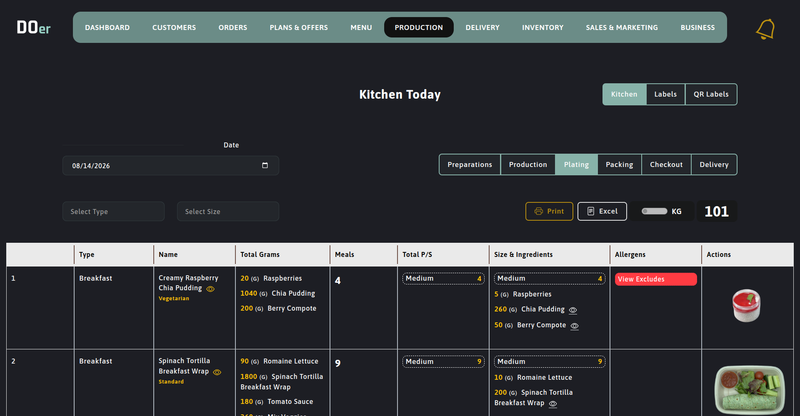

AI · personalized plans
PostgreSQL + Prisma
01 / FLAGSHIP
DOER
Meal Plan Solution · INNOCODE Consultancy
Worked directly with client stakeholders to translate business and operational challenges into scalable product decisions. Helped close product gaps, improve day-to-day efficiency and align engineering work with business priorities.
Architected an AI-powered chatbot using the Vercel AI SDK to deliver personalized recipe recommendations and meal plans based on dietary preferences, supporting the goal of stronger user engagement.
ReactReduxNodeExpressJSVercel AI SDKPrismaPostgreSQLAWS
BUSINESS OUTCOMEOperational efficiency · User engagement · Revenue
growth
View project ↗